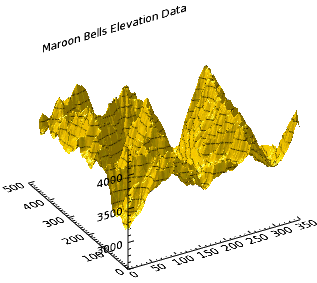

You can enhance surface graphics by overplotting contour data to show more detail. In this topic, we will use the SURFACE function along with the CONTOUR function using elevation data taken from the Maroon Bells area of the Rocky Mountains in Colorado.

The code shown below creates the graphic shown above. You can copy the entire block and paste it into the IDL command line to run it.
; Define the elevation data to use.
RESTORE, FILEPATH('marbells.dat', $
SUBDIRECTORY=['examples', 'data'])
; Display the elevation surface.
s = SURFACE(elev, TITLE='Maroon Bells Elevation Data')
; Overlay the contour data.
c = CONTOUR(elev, N_LEVELS=15, $
/ZVALUE, PLANAR=0, /OVERPLOT)
Note: The ZVALUE keyword will not have any visual effect unless PLANAR is set to 0 and the plot is in a 3D dataspace, such as in conjunction with the SURFACE function.